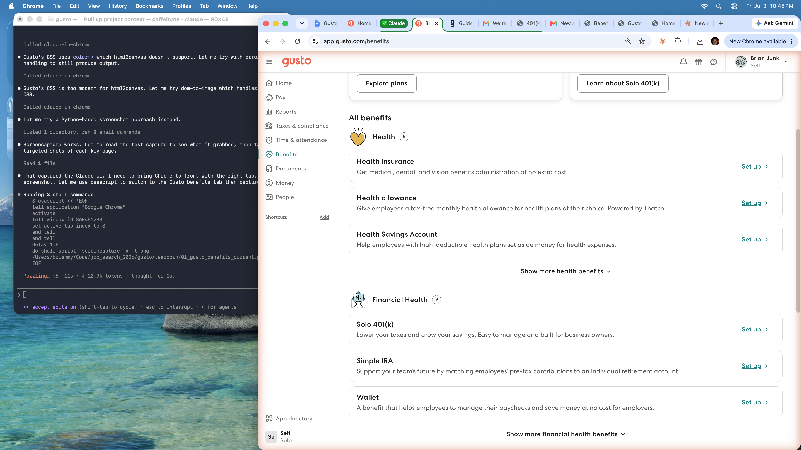
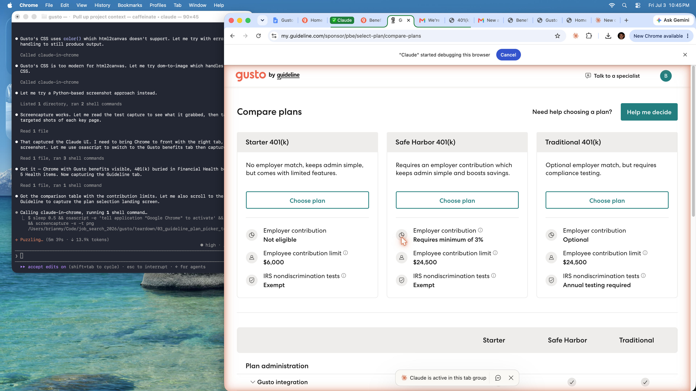
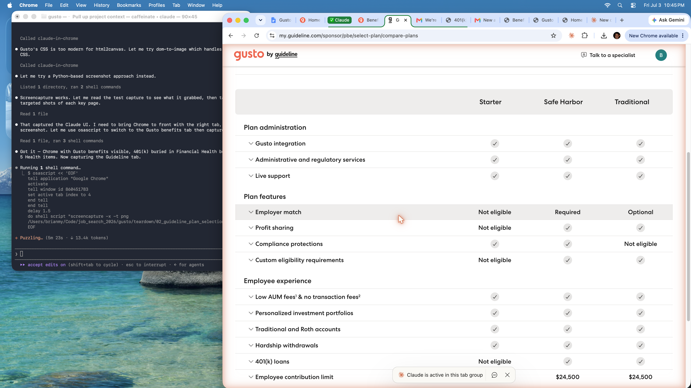

Gusto already knows which of its customers are in mandated states, how many employees they have, and whether they have a retirement plan. This prototype explores what happens when you use that data to surface the right action at the right moment — without asking the owner to do any of the work.
Before the owner ever logs in, Gusto detects the compliance gap from payroll data and sends a targeted email. No campaign. No new data collection. Just a signal Gusto already has.
Once the owner logs in, the mandate surfaces again — this time as a task in the dashboard and a featured recommendation in Benefits. The setup flow uses payroll data to pre-fill everything, reducing the process to a review and confirm.
Tip: enable Product thinking (bottom right of any page) to see annotated design rationale on each screen.
Screenshots of the existing Gusto and Guideline experience — useful for showing the before/after contrast.


